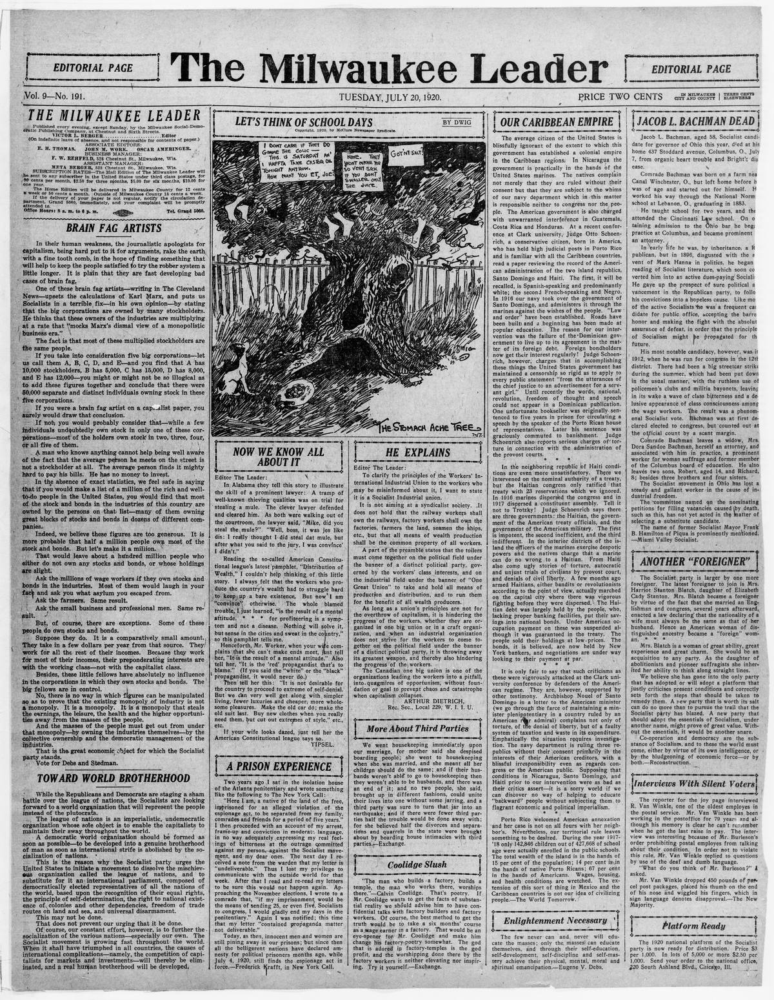

OUR CARIBBEAN EMPIRE
https://www.loc.gov/resource/sn83045293/1920-07-20/ed-1/?sp=10

See the original pageVer la página original
The average citizen of the United States is blissfully ignorant of the extent to which this government has established a colonial empire in the Caribbean regions. In Nicaragua the government is practically in the hands of the United States marines. The natives complain not merely that they are ruled without their consent but that they are subject to the whims of our navy department which in this matter is responsible neither to congress nor the people. The American government is also charged with unwarranted interference in Guatemala, Costa Rica and Honduras. At a recent conference at Clark university, Judge Otto Schoenrich, a conservative citizen, born in America, who has held high judicial posts in Porto Rico and is familiar with all the Caribbean countries, read a paper reviewing the record of the American administration of the two island republics, Santo Domingo and Haiti. The first, it will be recalled, is Spanish-speaking and predominantly white; the second French-speaking and Negro. In 1916 our navy took over the government of Santo Domingo, and administers it through the marines against the wishes of the people. “Law and order” have been established. Roads have been built and a beginning has been made at popular education. The reason for our intervention was the failure of the Dominican government to live up to its agreement in the matter of its foreign debt. Foreign bondholders now get their interest regularly! Judge Schoenrich, however, charges that in accomplishing these things the United States government has maintained a censorship so rigid as to apply to every public statement “from the utterances of the chief justice to an advertisement for a servant girl.” Until recently the words, national, revolution, freedom of thought and speech could not appear in a Dominican publication. One unfortunate bookseller was originally sentenced to five years in prison for circulating a speech by the speaker of the Porto Rican house of representatives. Later his sentence was graciously commuted to banishment. Judge Schoenrich also reports serious charges of torture in connection with the administration of the provost courts.
In the neighboring republic of Haiti conditions are even more unsatisfactory. There we intervened on the nominal authority of a treaty, but the Haitian congress only ratified that treaty with 23 reservations which we ignored. In 1916 marines dispersed the congress and in 1917 dispersed a constituent assembly. Tell it not to Trotzky! Judge Schoenrich says there are three governments: the Haitian, the government of the American treaty officials, and the government of the American military. The first is impotent, the second inefficient, and the third indifferent. In the interior districts of the island the officers of the marines exercise despotic powers and the natives charge that a marine can do no wrong to a Haitian. From Haiti also come ugly stories of torture, autocratic and unjust trials of civilians by provost court, and denials of civil liberty. A few months ago armed Haitians, either bandits or revolutionists according to the point of view, actually marched on the capital city where there was vigorous fighting before they were dispersed. The Haitian debt was largely held by the people, who, lacking proper banking facilities, put their savings into national bonds. Under American occupation payment on these was suspended although it was guaranteed in the treaty. The people sold their holdings at low prices. The bonds, it is believed, are now held by New York bankers, and negotiations are under way looking to their payment at par.
It is only fair to say that such criticisms as these were vigorously attacked at the Clark university conference by defenders of the American regime. They are, however, supported by other testimony. Archbishop Nouel of Santo Domingo in a letter to the American minister (we go through the farce of maintaining a minister plenipotentiary in a country ruled by an American rear admiral) complains not only of torture, of the denial of liberty, but of a faulty system of taxation and waste in its expenditure. Emphatically the situation requires investigation. The navy department is ruling three republics without their consent primarily in the interests of their American creditors, with a blissful irresponsibility even as regards congress or the American public. Supposing that conditions in Nicaragua, Santo Domingo, and Haiti prior to our intervention were as bad as their critics assert—it is a sorry world if we can discover no way of helping to educate “backward” people without subjecting them to flagrant economic and political imperialism.
Porto Rico welcomed American annexation and her case is not on all fours with her neighbor’s. Nevertheless, our territorial rule leaves something to be desired. During the year 1917-’18 only 142,846 children out of 427,668 of school age were actually enrolled in the public schools. The total wealth of the island is in the hands of 15 per cent of the population; 14 per cent is in the hands of native Porto Ricans; 67 per cent in the hands of Americans. Wages, housing, and health conditions are wretched. The extension of this sort of thing in Mexico and the Caribbean countries is not our idea of civilizing people.—The World Tomorrow.
How to cite this articleCómo citar este artículo
The Milwaukee Leader. (1920). Milwaukee, Wis., July 20, 192020 de julio de 1920. DR in the American PressRD en la Prensa Norteamericana. Library of Congress, Chronicling America: https://www.loc.gov/resource/sn83045293/1920-07-20/ed-1/?sp=10
ReferencesReferencias
Library of Congress, Chronicling America: The Milwaukee Leader, July 20, 192020 de julio de 1920.
Send an observationEnviar una observación
Does this article connect with your family, your town, or something you know? Did we get something wrong? Write to us. Observations go to the editor's inbox and are read by a person.¿Este artículo conecta con su familia, su pueblo o algo que usted conoce? ¿Nos equivocamos en algo? Escríbanos. Las observaciones llegan al buzón del editor y las lee una persona.
Send observationEnviar observación